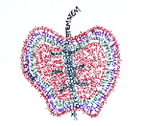
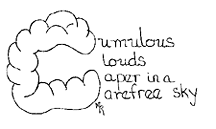
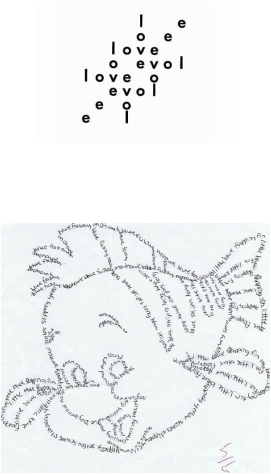
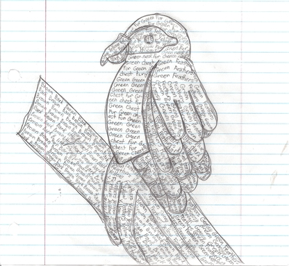

Concrete Poetry is the use of words and their physical formation to convey meaning. This may be done with color, the shape of the letters, and/or the arrangement of words. Samples below show some of the many variations available. To view various forms of concrete poetry on the Internet, you can check here or do a Google image search for concrete poetry. You may use the information you find at these links, but you may not publish it in anything other than a school report.
An alternative is to use a letter of the alphabet and create a phrase in which most of the words begin with that letter. The major letter should be drawn so that it suggests the object you are describing.|
 |
 |